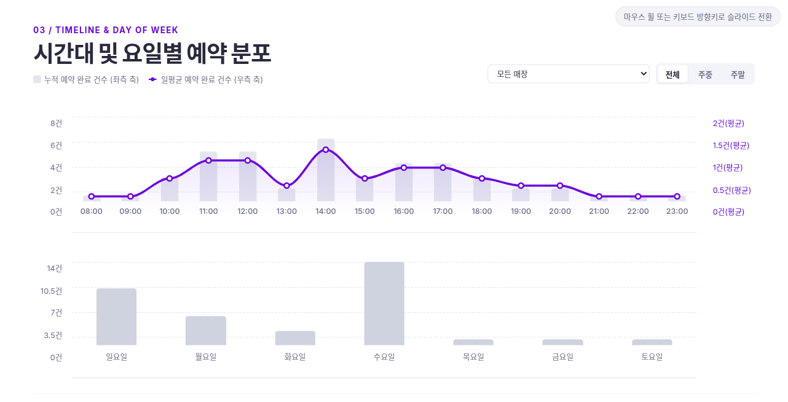

Booking Demand Tracker
공개 예약 페이지의 시간대별 예약 상태를 매일 모아 상권 이용량을 추정한 수집·분석 도구
개요
- 계기: 상권 조사 중 업체마다 예약이 실제로 얼마나 이뤄지는지 알고 싶었지만 예약 건수는 비공개
- 방법: 공개 예약 페이지의 시간대별 예약 상태를 매일 모아 이용량을 간접 추정
- 결과물: 매일 도는 수집기와, 내려받은 CSV를 끌어다 놓으면 바로 그려지는 브라우저 대시보드
수집부터 분석까지
수요 파악의 문제
- 상권에 들어갈지 판단하려면 이용량의 흐름이 필요했지만, 손으로 볼 수 있는 건 한 시점의 화면뿐
- 업체별 예약 건수는 공개되지 않음
- 여러 업체의 예약 현황을 보려면 페이지를 하나씩 열어 엑셀로 옮겨야 함
- 한 시점만 봐서는 요일별, 시간대별 흐름과 추세를 알 수 없음
수집 방식
- 헤드리스 브라우저(Puppeteer)로 업체별 모바일 예약 페이지를 엶
- 화면의 글자를 긁지 않고, 페이지가 스스로 불러오는 시간대별 예약 데이터 응답을 가로채 기록
- 화면 구조가 바뀌어도 덜 깨지고, 값이 이미 구조화되어 있음
- 인증 토큰이나 따로 알아낸 API 키 없이, 페이지를 여는 것과 같은 요청만 사용
- 대상 업체는 설정 파일로 관리, 장소 주소 하나로 업체를 등록하는 명령 제공
- 예약 자원 ID를 모르면 페이지의 상태 데이터에서 자동으로 찾음
- 스케줄러(cron)로 하루 한 번 수집해 데이터가 계속 쌓이게 함
적재와 분석
- 업체, 예약 자원, 날짜, 시간, 상태를 하루 한 파일, 슬롯마다 한 줄로 저장
- 엑셀에서 바로 열리도록 인코딩을 맞춤
- 대시보드는 서버 없는 HTML 한 파일. 여러 날짜의 CSV를 끌어다 놓으면 기간 전체로 합쳐 업체 순위, 시간대별, 요일별 분포와 추세를 그림
- 데이터는 브라우저 밖으로 나가지 않음
# reservations_YYYYMMDD.csv: one file a day, one row per slot
StudioName, ResourceID, Date, Time, Status대리 지표 설계
- 필요한 값을 직접 얻을 수 없을 때, 얻을 수 있는 값 중 가장 가까운 것을 골라 꾸준히 쌓는 쪽을 선택
- 지표: 예약 건수 대신 시간대마다 예약이 찼는지를 기록해 이용량 추정
- 수집 주기: 한 번이 아니라 매일. 같은 방식으로 쌓아야 요일별, 시간대별 패턴과 기간 추세가 보임
- 규모: 조사용이라 서버, 외부 DB, API 키 없이 로컬 수집과 브라우저 시각화만으로 끝나게 해 운영 부담을 남기지 않음
결과: 진입하지 않기로 결정
- 쌓인 데이터로 요일별, 시간대별 예약 분포를 확인
- 예약 이용률이 낮다는 결과를 근거로 해당 사업 검토를 접음
- 한계: 예약이 찬 슬롯은 보이지만 실제 방문이나 취소는 알 수 없어, 이용량의 절대값이 아니라 흐름을 보는 용도
